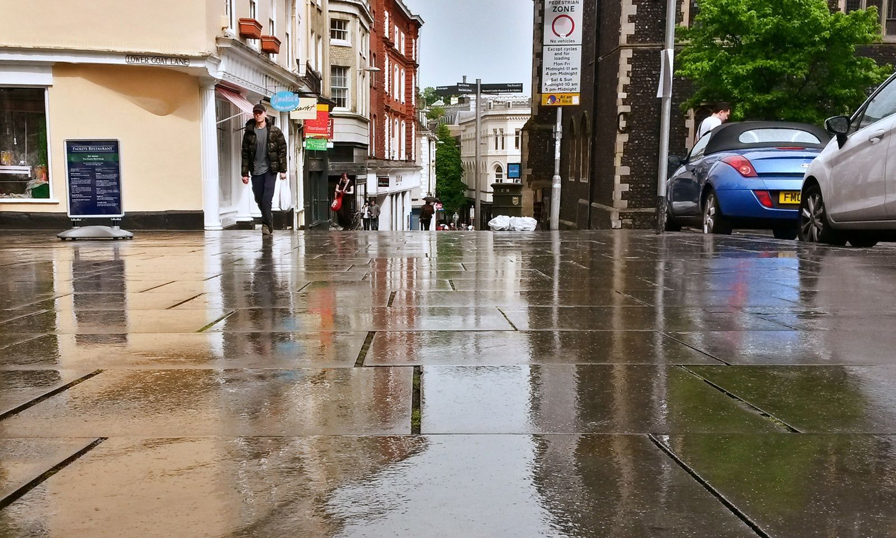

Clasifique en Lanes, Market y todo East Anglia.
Cuatro escalones, construidos para Norwich. Sin jerga, sin informes de 40 páginas que nunca leerás, solo el trabajo que mueve la aguja.
Primero ve la imagen completa de su presencia en las búsquedas en Norwich (brechas, competidores, oportunidades) antes de pagar por nada.
Velocidad, experiencia móvil, indexación y estructura para su sitio de Norwich. Si Google no puede rastrearlo limpiamente, nada más importa.
Citas, enlaces locales y menciones que le dicen a Google que usted es una empresa real de Norwich que vale la pena clasificar.
Páginas nuevas, locales y útiles para Norwich todos los meses: del tipo que clasifica y del tipo que los clientes realmente leen.
Norwich es la capital regional de East Anglia, un mercado autónomo donde los seguros, la tecnología financiera y una escena minorista ferozmente independiente impulsan las búsquedas locales. Desde Lanes hasta Riverside, los clientes investigan en línea antes de visitar, llamar o comprar. Trabajo directamente con empresas de Norwich: una auditoría adecuada, una estrategia diseñada para este mercado y ejecución práctica en SEO técnico, contenido y creación de autoridad.
Solo acepto unos pocos clientes a la vez, por lo que su negocio de Norwich obtiene trabajo práctico y respuestas directas, sin una cola de tickets ni un gerente de cuentas junior.

Cuando alguien en Norwich busca lo que usted vende, Google muestra primero tres empresas y luego el resto. Si no estás en ese primer grupo, la mayoría de las llamadas van a otro lado.
Su empresa no aparece cuando los clientes de Norwich buscan en el mapa. Ese espacio es para quien optimizó primero.
Los competidores de Norwich recopilan reseñas cada semana. Recopilas silencio y el algoritmo se da cuenta.
Las páginas genéricas no pueden ganar "Norwich cerca de mí". Las páginas locales pueden hacerlo.
Comienza con una auditoría: usted ve el panorama completo de su presencia en las búsquedas en Norwich (brechas, competidores, oportunidades) antes de pagar por nada. Luego limpieza técnica: velocidad, experiencia móvil, indexación y estructura. A partir de ahí, la autoridad local se construye a través de citas, enlaces locales y menciones, además de páginas locales nuevas y útiles cada mes. Informado en inglés sencillo, todos los meses.
La clasificación en Norwich no se trata de trucos. se trata de siendo la respuesta más completa y confiable cuando un cliente local realiza una búsqueda: en su sitio web, en su perfil comercial de Google y en toda la web local.
Eso es lo que construyo en Norwich: un perfil que parece vivo, páginas que coinciden con la forma en que los clientes de Norfolk realmente buscan y un flujo de reseñas que sigue funcionando mientras usted administra su negocio.
No soy una agencia con un equipo de ventas. Soy la persona que hace el trabajo y la persona que responde cuando preguntas qué está pasando.
Trabajo con empresas de servicios locales en Norwich (plomeros, clínicas, restaurantes, comercios), no con marcas empresariales.
Mes a mes. Mantengo a los clientes de Norwich mediante entregas, no mediante papeleo.
Te ayudo a obtener reseñas genuinas de la manera correcta y a responderlas todas, porque en Norwich, eso representa la mitad de la clasificación.
Arreglo las cosas complicadas y las explico en inglés sencillo. Mantienes el control sin necesidad de aprender SEO.
Sin niveles, sin ventas adicionales, sin llamadas "empresariales". Un plan que cubre todo lo que una empresa de Norwich necesita para ganar búsquedas locales.
Obtenga una auditoría SEO gratuita de su negocio en Norwich: un desglose en inglés sencillo de lo que lo está frenando y exactamente lo que yo solucionaría primero.
Solicite mi auditoría gratuitaRespuestas directas a las preguntas que más escucho de los propietarios de empresas de Norwich.
Sí, y muchos lo hacen. Los resultados locales de Google cubren el área urbana de Norwich, no sólo el centro de la ciudad. Lo que importa es un área de servicio configurada correctamente, contenido relevante para Norwich en su sitio y la solidez de las reseñas, no un código postal de Castle Meadow. Las empresas de las afueras a menudo ganan al ser propietarias primero de su área inmediata y luego expandirse.
No compita con ellos: únase a ellos en los resultados. Dirígete a búsquedas de descubrimiento como "mejores tiendas independientes de Norwich" y tu nicho ("ropa vintage de Norwich"), mantén actualizada la foto de tu perfil comercial y convierte tus seguidores sociales en reseñas de Google. La pisada de Lanes es un motor de revisión que la mayoría de los minoristas nunca activan.
Lo simplifica. Sin una metrópolis vecina que diluya los resultados, Norwich es un mercado limpio y autónomo, y su área de influencia realmente se extiende a lo largo de Norfolk y el norte de Suffolk, porque los buscadores allí utilizan por defecto "Norwich". Las páginas de ubicación deben nombrar explícitamente esas ciudades; responde a la pregunta que se hacen esos buscadores.
Son enormes pero cíclicos: las búsquedas de alquileres, almacenamiento, comida y vida nocturna aumentan cada otoño y nuevamente alrededor del volumen de ventas de verano. Las empresas cercanas a la universidad deben mantener el contenido y las publicaciones de perfiles comerciales estacionales: el calendario de contenido de agosto de un agente inmobiliario no se parece en nada al de febrero, y las clasificaciones siguen el mismo ritmo.
Son los cimientos, no todo el edificio. Un perfil terminado con críticas sólidas le brindará visibilidad en el paquete de mapas para búsquedas al estilo de "plomero Norwich", pero las empresas que dominan también tienen páginas de servicios para cada tipo de trabajo y ciudad de influencia, que es lo que convierte la visibilidad en un diario completo. El perfil por sí solo deja dinero sobre la mesa.
También ayudo a empresas de Norfolk a clasificarse en Google.
Reserve una llamada estratégica gratuita de 30 minutos. Auditaré su visibilidad de Norwich en vivo y explicaré exactamente lo que se necesitaría para llegar al top 3.